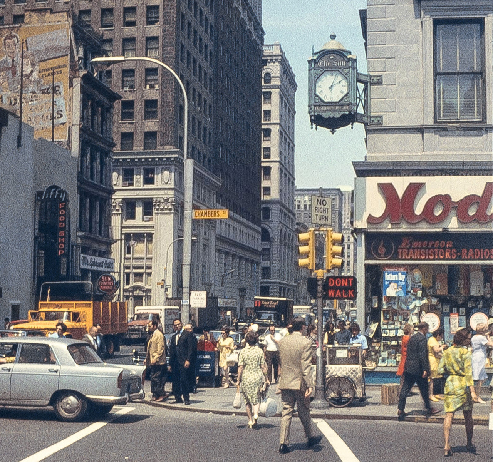

1965 at the Soldiers and Sailors Monument in Riverside Park
1965 at the Soldiers and Sailors Monument in Riverside Park

Early graffiti in Brooklyn, 1972
Coney Island and Brighton Beach Avenues, 1978
East Fordham Road and Valentine Avenue in the Bronx, 1974
Pretzels, outside St. Patrick’s church, 1970s
6th Ave. between 48th and 49th. McGraw-Hill Building Courtyard, 1979.

Sup.

7th Ave and 48th St, 1980. Orange Julius, Brew and Burger, and porn.
The Church Bus, waiting to take heathens away from the NY Public Library, 1970s
Union Square, 1974
Massacre of Pleasure, 1970 in Times Square

South Bronx, 1980

Nice piece!
Grand Army Plaza, Brooklyn, 1973
Riding the D, 1970
Newport neon sign, looming over Bruckner Blvd in the Bronx, 1997
Kent, 2:57
I was wondering if you had a good nighttime picture of the old neon I ❤️ Newport/I ❤️ New York billboard on 20 Bruckner Boulevard in the Bronx with views from the Harlem River Drive. That sign was my youth.
Love your blog! Thank you!
I don’t suppose this is the one?
Whatchu lookin’ at?
Chillin’ on the Upper West Side, 1981

Deborah Harry and Chris Stein, 1980
Orchard Street, 1978

82nd near Central Park West, 1977
Chinatown, 1970

Broome and Wooster, 1970s

Avenue C and 6th Street, 1984

Times Square theater billboards, 1981

On line at TKTS, 1983
Village Artists, MacDougal and 3rd Street, 1970

125th and Lenox Ave, 1958

Polyester, filmed in Odorama. Times Square, 1981.
Cabs all lined up to go to the Times Square Adult Shopping Center, 1990s
42nd and 5th, 1974

Don’t Bother Me, I Can’t Cope.
47th Street, The Edison Theater, 1973
10th Ave and 46th St, 1960s
34th St and 3rd Ave, 1978
7th Ave near 47th St, 1984

Under the Manhattan Bridge in 1975

Ominous silhouettes outside the WTC, 1974

A tale of two cities, on the Brooklyn Bridge in 1983

Broadway between 82nd and 83rd, 1985. Funny, I remember the Burger King there, but not the Red Apple supermarket. =
Alphabet City, 1985
The WTC from Warren Street, 1981
Harlem, New York.

Broadway & Chambers NYC circa 1968

Ah, NY pizza, I miss you most of all.

Plato’s Retreat, 1980. A sex club on the upper west side.
The Carnegie Deli in its heyday, 1982
Maxin’ and relaxin’, 1980

Somewhere in midtown, 1980
{kind=link}